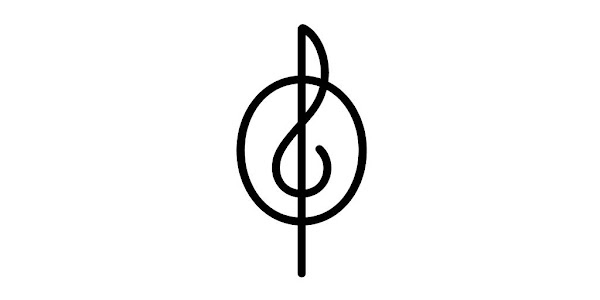
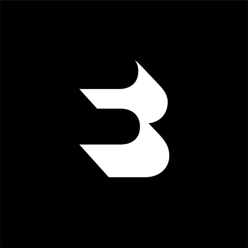
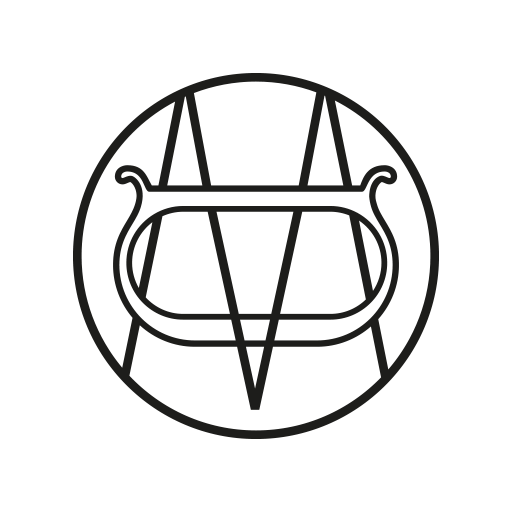
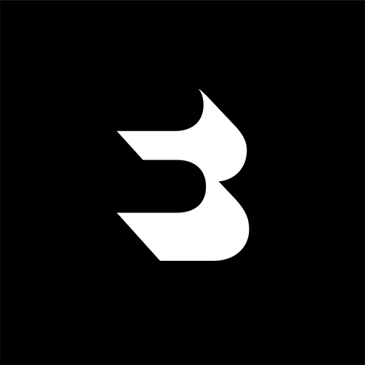
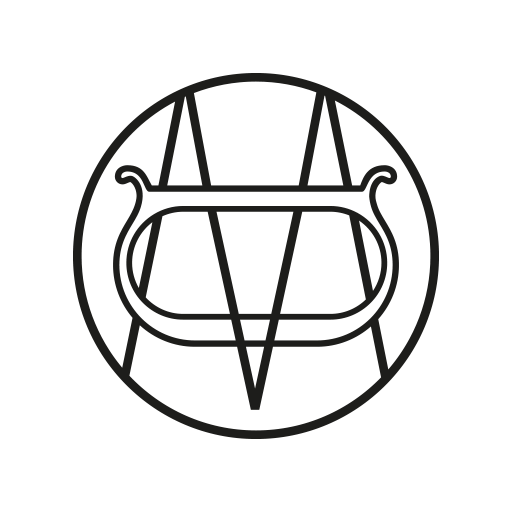

Web Presentación Stardew Valley Alan Alcañiz
EMPRESAS
Inditex es un grupo líder en moda con marcas como Zara, Pull&Bear, Massimo Dutti y Bershka. Su modelo de producción ágil le permite responder rápido a las tendencias. Además, apuesta por la innovación y la sostenibilidad.


 


